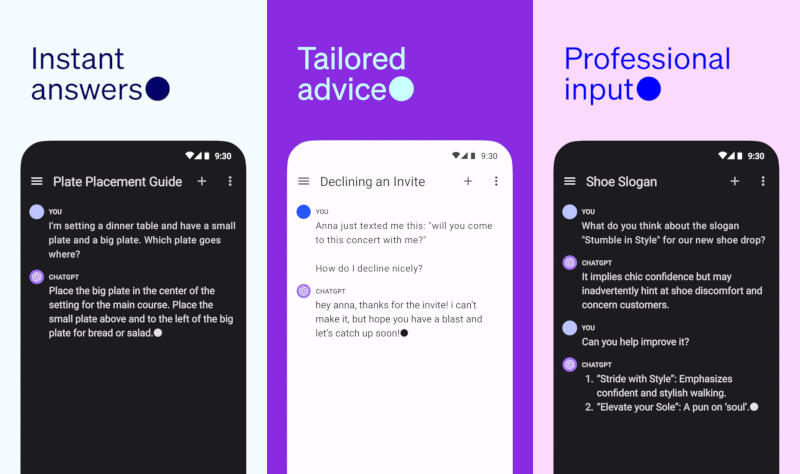

ChatGPT как универсальный помощник
ChatGPT это универсальный инструмент, который может стать вашим незаменимым помощником в самых разных сферах. Вот несколько интересных сценариев, где ChatGPT будет полезен:
1. Обучение и саморазвитие
Заблудились в сложной теме или не можете понять какой-то концепт? ChatGPT объяснит материал простыми словами, подберёт примеры или поможет с выполнением домашних заданий.
2. Написание текстов
Вам нужно подготовить эссе, письмо или просто вдохновиться идеей для статьи? ChatGPT поможет сформулировать мысли, предложит структуру текста или даже создаст уникальное письмо за пару секунд.
3. Планирование и организация
Создайте план на день, напишите список покупок или составьте маршрут для путешествия. ChatGPT умеет быстро анализировать запросы и предлагать удобные варианты.
4. Помощь программистам
Столкнулись с ошибкой в коде или не знаете, с чего начать? ChatGPT разберёт вашу проблему, предложит исправления, а также поможет понять, как работают технологии.
5. Развлечения и хобби
Хотите узнать необычный рецепт блюда, придумать сюжет для короткой истории или просто поиграть в викторину? ChatGPT всегда готов предложить креативные идеи и помочь найти вдохновение.
6. Переводы и языковая практика
Не уверены в грамматике или хотите потренироваться в иностранном языке? ChatGPT переводит тексты, объясняет правила и даже может стать вашим собеседником.
ChatGPT — это ваш универсальный помощник для обучения, работы и творчества! Почему бы не попробовать его возможности прямо сейчас?
Преимущества использования ChatGPT в реальной жизни
1. Экономия времени
Человек, регулярно обращающийся к ChatGPT, может быстро находить нужную информацию, писать тексты без долгих размышлений и даже формировать маршруты. Это особенно полезно в условиях постоянной занятости, когда время — главный ресурс.

2. Повышение продуктивности
За счёт умения ChatGPT генерировать идеи, редактировать и структурировать тексты, пользователь может сосредоточиться на более важных задачах. Чат-бот берёт на себя рутинные мелочи, тем самым повышая общую эффективность человека.

3. Расширение кругозора
ChatGPT отлично подходит для изучения новых тем и развития навыков. Он подскажет дополнительные материалы, научит сложным концептам в доступной форме и поделится полезными ссылками. Это даёт возможность постоянно расширять свои знания.
4. Творческая поддержка
Нужно придумать креативное поздравление, сюжет для рассказа или нестандартный рецепт? ChatGPT предложит оригинальные идеи и вдохновит на собственные творческие эксперименты. С ним легко отступать от привычных шаблонов.

5. Языковая практика и переводы
Нейросети помогают улучшить владение иностранными языками: ChatGPT может ответить на вопросы или скорректировать грамматические ошибки. Кроме того, он переводит тексты на разные языки — это экономит время и делает международное общение проще.

6. Техническая помощь
Часто ChatGPT выручает программистов, предлагая отладку кода и объясняя алгоритмы. Его советы ускоряют процесс обучения, а ошибки становятся проще для понимания и исправления.